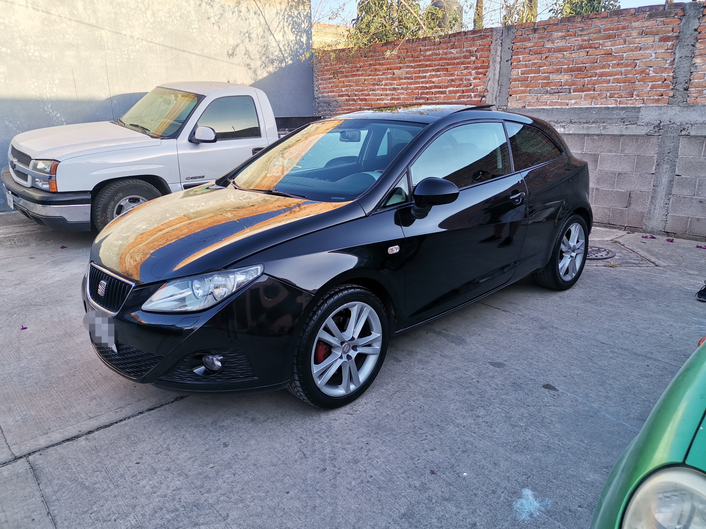

|
|  |
Reseña
El nombre de Autos Bennett, una firma dedicada principalmente al negocio de compra y venta de automóviles debutó con este nombre Autos Bennett en 2022.Sin cambios importantes para 2022, Autos Bennett sigue siendo uno de los sedanes favoritos dentro del segmento de los subcompactos gracias a su calidad y equipamiento.
Calificación